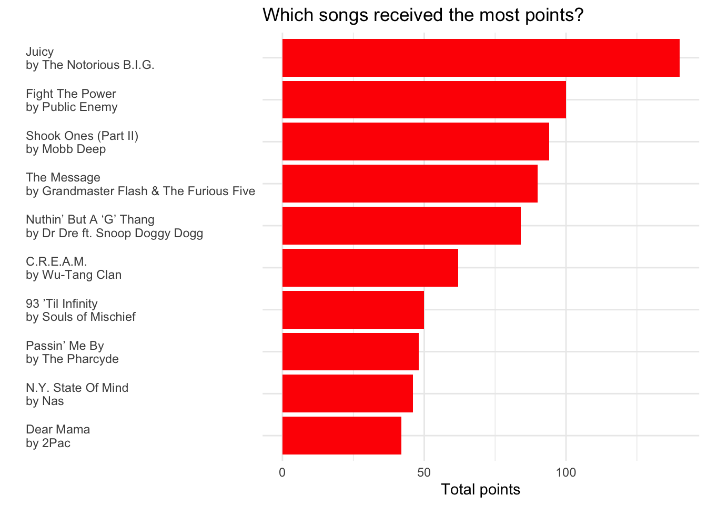
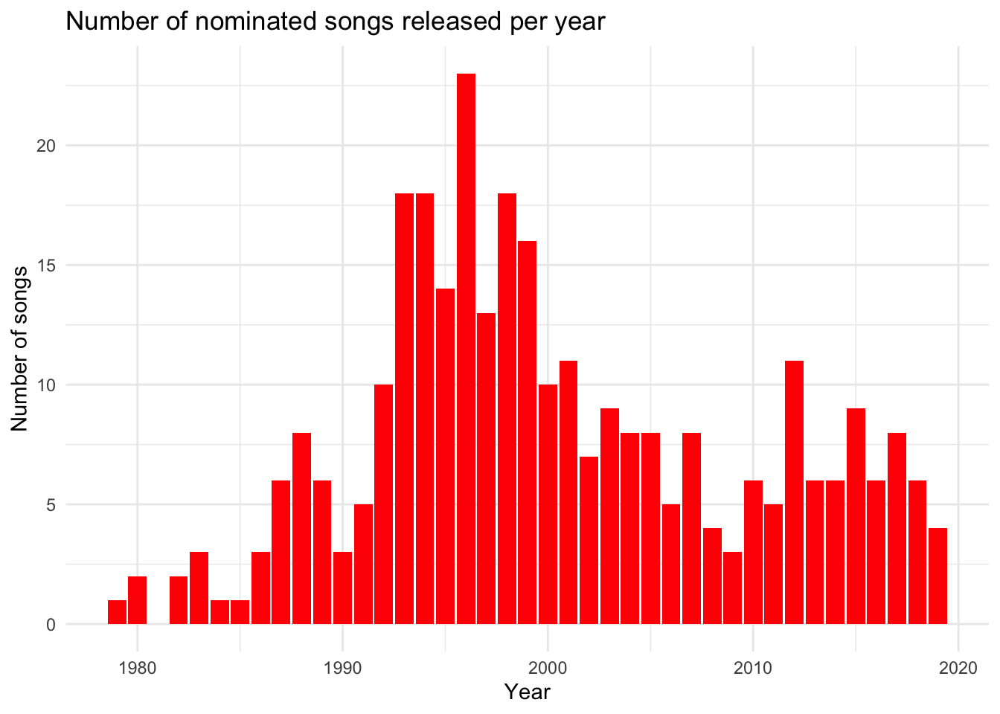
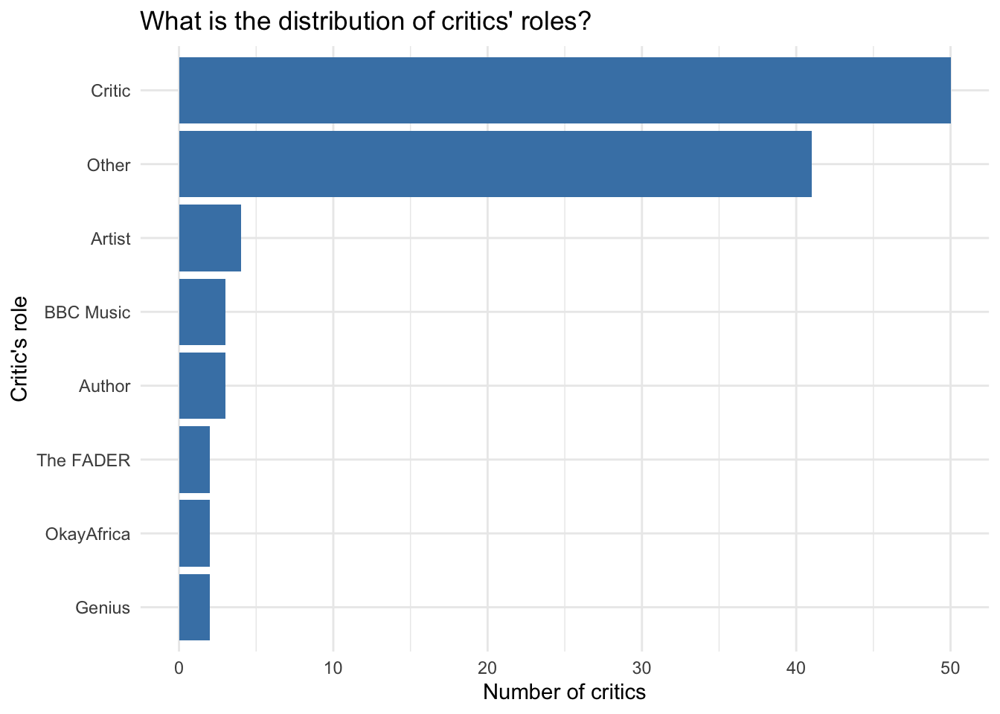

This Tidy Tuesday analysis revolves around hip-hop data and song ratings by critics within the genre.
Earlier this year, BBC Music asked more than 100 critics, artists, and other music industry folks from 15 countries for their five favorite hip-hop tracks. Then they broke down the results of the poll into one definitive list. But BBC Music didn’t just publish a best-of list, they also published the complete poll results and a description of the simple algorithm they ranked the songs with. - Simon Jockers We awarded 10 points for first ranked track, eight points for second ranked track, and so on down to two points for fifth place. The song with the most points won. We split ties by the total number of votes: songs with more votes ranked higher. Any ties remaining after this were split by first place votes, followed by second place votes and so on: songs with more critics placing them at higher up the lists up ranked higher. -- BBC Music
- Which songs received the most points? - What is the distribution of nominated song release years and song points over time? - What is the distribution of critics’ roles? - What is the distribution of critics’ primary country?
Let’s start with something simple: let’s look at the songs with the most points. We will restrict the plot to the top ten because each of the more than 300 songs received at least two points.
Show the code
# Top 10 songs artist_rankings %>%top_n(10, points) %>%mutate(title_artist =paste0(title, "\nby ", artist),title_artist =fct_reorder(title_artist, points)) %>%ggplot(aes(x = title_artist, y = points)) +geom_col(fill ="red") +coord_flip() +theme_minimal() +theme(axis.text.y =element_text(hjust =0)) +labs(title ="Which songs received the most points?",x ="",y ="Total points")

What is the distribution of nominated song releases and song points over time?
Show the code
# Number of nominated songs released per yearartist_rankings %>%count(year) %>%ggplot(aes(x = year, y = n)) +geom_col(fill ="red") +theme_minimal() +labs(title ="Number of nominated songs released per year",x ="Year",y ="Number of songs")

Show the code
# Total number of points awarded per yearartist_rankings %>%group_by(year) %>%summarize(yearly_points =sum(points)) %>%ggplot(aes(x = year, y = yearly_points)) +geom_col(fill ="red") +theme_minimal() +labs(title ="Number of song points awarded by release year",x ="Year",y ="Points")
Both plots show a significant increase in the 90s, which is consistent with the genre [becoming a best-selling music genre in the mid-1990s and the top selling music genre by 1999](https://en.wikipedia.org/wiki/Hip_hop_music#Mainstream_breakthrough).
Visualizing points, gender, and time together
Now that we’ve taken a look at points, gender, and time separately, let’s view how they all interact together.
While the votes/points for these songs were done by [critics, industry figures, artists, academics in the field of hip-hop and music](http://www.bbc.com/culture/story/20191007-the-greatest-hip-hop-songs-of-all-time-who-voted), it is important to keep in mind that music is a subjective field. We can take a quick look at some of the top roles of those critics:
Show the code
# Top critic rolesartist_polls %>%distinct(critic_name, .keep_all =TRUE) %>%mutate(role_lump =fct_lump(critic_rols, 6)) %>%count(role_lump, sort =TRUE) %>%mutate(role_lump =fct_reorder(role_lump, n)) %>%ggplot(aes(x = role_lump, y = n)) +geom_col(fill ="steelblue") +coord_flip() +theme_minimal() +labs(title ="What is the distribution of critics' roles?",x ="Critic's role",y ="Number of critics")

What is the distribution of critics’ primary country?
Show the code
artist_polls %>%distinct(critic_name, .keep_all =TRUE) %>%count(critic_country) %>%mutate(critic_country =reorder(critic_country, n)) %>%ggplot(aes(x = critic_country, y = n)) +geom_col(fill ="steelblue") +coord_flip() +theme_minimal() +labs(title ="What is the distribution of critics' primary country?",x ="Critic's country",y ="Number of critics")